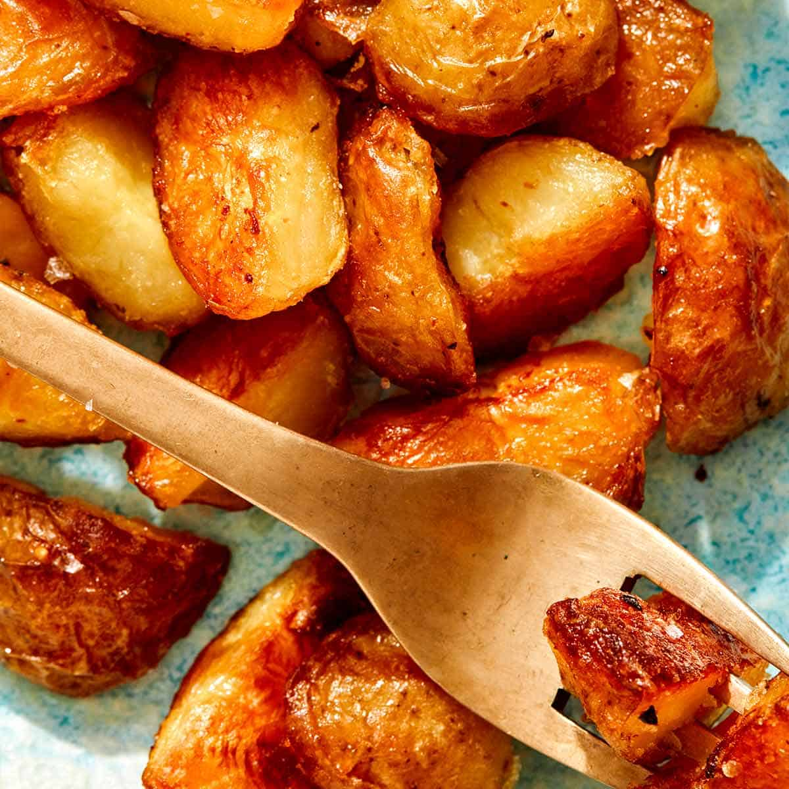

Oven Roasted Potatoes

What are Roasted Potatoes?
This is somewhat of a tough one. It seems to be a simple dish but people seem to mess it up all the time!
Ingredients
- 3 russet potatoes
- garlic powder to taste
- onion powder to taste
- paprika to taste
- salt to taste
- bag of shredded parmesean cheese
- olive oil
- italian seasoning
Steps
- Cut potatoes into 1 inch by 1 inch blocks
- add to large mixing bowl
- add all dry seasoning into the potatoes and mix
- lay blocks flat on a baking tray
- drizzle with olive oil
- cover all the potatoes with parmesean cheese
- preheat oven to 320-350
- bake for 2 hours
- broil low for 3 minutes
- Enjoy!
Home